omakase (お任せ) — “I leave it up to you.” The chef chooses; you get the good stuff without having to order it.
An R package for sashimi plots, genome-track figures and transcript-consequence analysis. It reads coverage and junctions straight from BAM/SAM files, rMATS event tables, STAR junction files, 5′-tag BEDs or plain data frames, and draws them with defaults that are already publication-ready. It can also answer what does an alternative start site actually do to the transcript?
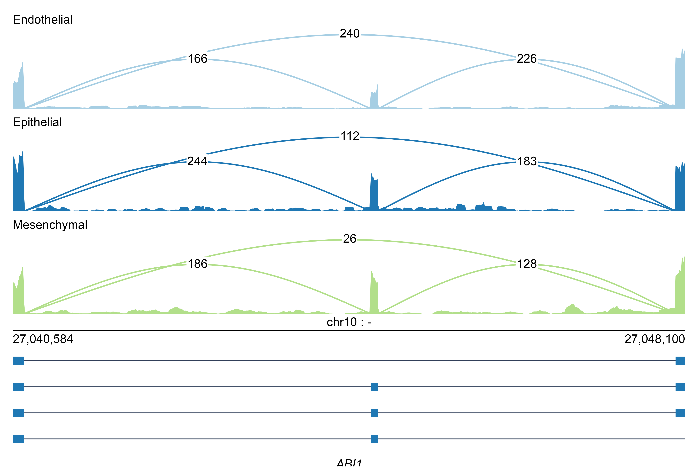
Table of contents
- About
- Dependencies
- Install
- Principles
- Usage
- Plot examples
- All arguments
- Comparison with other tools
- Copyright and license
About
A sashimi plot shows read coverage over a locus with arcs marking the spliced junctions, and it is the standard way to show that a splicing or start-site event is real. The existing tools work, but they share a shape: a Python script that walks a BAM, decides how the figure should look, and writes a file. ggsashimi literally emits R source code as a string and pipes it to Rscript; rmats2sashimiplot vendors a copy of MISO and draws with matplotlib. In both cases the figure is the only output. If you want a different arc, a normalised axis, or the numbers behind a curve, you re-run the whole thing with different flags — or you cannot get there at all.
omakase splits the problem in two.
BAM / SAM / CRAM ─┐
rMATS events ┤ ┌─→ plot_sashimi()
5′-tag BED ├──→ sashimi_data ───────┼─→ plot_tracks()
STAR SJ.out.tab ┤ (six tidy tables) └─→ plot_consequence()
tidy tables ─┘Every reader produces the same documented object; every drawing function consumes one. Three things follow from that:
-
The slow part happens once. Counting reads out of a BAM is the expensive step. Do it once, keep the tables, re-plot instantly — or write them to disk with
write_sashimi_data()and read them back next week. -
Figures are objects, not files.
plot_sashimi()returns apatchworkofggplotpanels. Add a layer, change a scale, drop it into a larger figure. Nothing is baked in. - New inputs are cheap. If your counts come from a tool omakase has never heard of, build the six tables yourself and everything else works.
And because the object is data rather than pixels, the package can do things a plot-only tool cannot: normalise coverage, compute PSI, render the same locus as a browser-style track view, and classify what a start-site switch does to the protein.
The visual style is deliberate and consistent: 9 pt type, black and unbolded everywhere including the panel labels, hairline rules, no chartjunk between panels. Colour is ColorBrewer Paired and is carried by the tracks themselves, never by the type, which is what keeps a stack of six panels readable at column width.
Dependencies
R ≥ 4.1.
| Packages | |
|---|---|
| Imports (installed automatically) | ggplot2 (≥ 3.5.0), ggforce, patchwork, scales, labeling, rlang, cli, grid, grDevices, stats, tools, utils |
| Imports (Bioconductor) | Rsamtools, GenomicAlignments, GenomicRanges, IRanges, S4Vectors, rtracklayer |
| Suggests | Biostrings and BSgenome (ORF calling), arrow (parquet), optparse (the CLI), ragg and svglite (extra devices), knitr, rmarkdown, testthat, withr |
The Bioconductor packages are needed because reading a BAM and parsing a GTF are core features, not optional ones. Biostrings is only required if you call open reading frames, so the plotting side installs without it.
Install
# install.packages("remotes")
remotes::install_github("EthanShenx/omakase")The Bioconductor dependencies come from Bioconductor, so make sure its repository is on your list first:
install.packages("BiocManager")
BiocManager::install(c("Rsamtools", "GenomicAlignments", "GenomicRanges",
"IRanges", "S4Vectors", "rtracklayer"))
remotes::install_github("EthanShenx/omakase")To use the command-line interface, install optparse and put the shipped script on your PATH:
Rscript -e 'install.packages("optparse")'
ln -s "$(Rscript -e 'cat(system.file("scripts", "omakase", package = "omakase"))')" ~/bin/omakasePrinciples
Everything below is exposed as a documented function, so you can inspect, replace or reuse any piece of it rather than taking the figure on trust.
Junction arc geometry
An arc runs from donor to acceptor and peaks at height . Parameterising by with , the six shapes are:
arc_shape |
Curve | Origin |
|---|---|---|
sine (default)
|
omakase | |
parabola |
— | |
bezier |
MISO | |
xspline |
ggsashimi | |
elbow |
straight risers, flat top | — |
arch |
— |
For the Bézier the control points are lifted to , because , so puts the apex at exactly . Every shape starts and ends on the baseline and reaches exactly , so shapes are directly comparable.
Height. With arc_height_frac given as a named vector, height is keyed by the junction’s role, so a given feature draws at the same height in every panel — the reader learns “the tall arc is the alternative site” once rather than per panel. Unnamed, the fractions are cycled across arcs, those sharing an end point first, so their labels cannot collide. Once there are more arcs than the stagger can separate, height scales with the span of the junction, , so nested junctions nest visually instead of crossing.
Width. The classic convention is that a better-supported junction is drawn thicker:
with , , by default, clamped to a sane range. Passing arc_width_rule = "miso" reproduces MISO’s instead.
See ?arc_path, ?arc_heights, ?arc_widths.
Intron compression
Most of a gene is intron, so a linear axis spends most of its width on empty sequence. omakase builds an explicit, strictly increasing, piecewise-linear map that draws each intron of length at a reduced length , and each exonic stretch divided by exon_scale:
shrink_method |
Origin | |
|---|---|---|
none |
— | |
power (default)
|
, | ggsashimi |
log |
— | |
fixed |
— | |
scale |
rmats2sashimiplot --intron_s
|
Writing the cumulative shift after the -th intron as
the map is on exonic stretches and interpolates linearly across each compressed intron. Overlapping introns are merged first, so stays monotone, and introns below shrink_min are left alone because compressing a 60 bp intron buys no width and distorts short-intron genes.
Because is strictly increasing it has an exact inverse. That is what lets the coordinate bar carry tick marks at evenly spaced plot positions labelled with the true genomic coordinates they map back to — the unequal spacing of those labels is precisely the compression, made visible rather than hidden. intron_trans() wraps the same map as a scales transform for use with scale_x_continuous().
Coverage normalisation
Neither ggsashimi nor rmats2sashimiplot normalises, so a deeply sequenced library looks like a highly expressed gene. With the raw signal in bin of sample , the library size and the bin width in kilobases:
normalize |
Value |
|---|---|
none |
|
cpm, rpm
|
|
rpkm |
|
size_factor |
|
manual |
|
max, sum
|
scaled to a maximum, or a total, of 1 |
where is DESeq2’s median-of-ratios size factor,
taken over bins with non-zero signal in every one of the samples. Junction counts are rescaled by the same per-sample factor, so an arc’s label stays on the same scale as the track beneath it.
See ?normalize_tracks.
Percent spliced in
Two definitions are in circulation and they are not the same number. The plain activity ratio,
is well defined for junction counts, start-site activities, or anything else additive. rMATS instead reports a length-corrected inclusion level,
dividing each count by the number of positions at which a read could have produced it. omakase computes both and records which it used. Where both terms are zero, is NA rather than 0 — no signal is not the same as no inclusion.
See ?compute_psi, ?delta_psi.
Transcript consequence
A gene fires from two promoters. The browser shows two transcripts starting in different places — but what does that do? Sometimes nothing to the protein and everything to its regulation; sometimes the protein itself gains or loses an N-terminus. Those are different claims, and a picture does not distinguish them.
Let , be the peptides the reference and alternative isoforms encode and , their 5′ UTR lengths. The decision tree is:
- ORF loss; ORF gain; both empty unclassified. Calling a pair with no ORF in either isoform an “ORF loss” would blame the start site for a failure that was already there.
-
— the protein is untouched, so the change is purely 5′. If the two first exons are disjoint and the alternative site is downstream, the gene has switched promoters outright: promoter swap. Otherwise a 5′ UTR change,
longer/shorter/equalby . - — if ends with it is an N-terminal truncation; if ends with , an extension; otherwise an alternative N-terminus.
The order matters: a 5′ UTR change wins over anything that merely looks dramatic in a genome browser, because if the protein is identical the consequence is regulatory however far apart the two start sites are.
A guard runs first. The reciprocal overlap of the two transcript spans,
is zero when the two “isoforms” do not overlap at all. That is not one transcription unit with two start sites, it is two separate transcripts sharing a gene label, and such pairs are marked Distal (excluded) rather than classified.
For longer 5′ UTRs the gain in upstream AUGs, , is also reported: an AUG gained in a lengthened 5′ UTR can open an upstream reading frame and suppress translation of the main one, which is what makes “longer 5′ UTR” a claim about regulation rather than a curiosity.
See ?classify_consequence, ?find_orf, ?orf_table.
Usage
Unless noted, examples run against the data shipped in inst/extdata: six public ENCODE libraries over the human ABI1 locus, two from each of three cell types.
From alignments
library(omakase)
bams <- system.file("extdata", "samples.tsv", package = "omakase")
gtf <- system.file("extdata", "annotation.gtf", package = "omakase")
sd <- sashimi_from_bam(
bams,
region = "chr10:27040584-27048100",
annotation = gtf,
min_count = 10
)
sd
#> <sashimi_data>: 1 locus, 3 groups
#> • tracks: 5016 rows
#> • junctions: 18 rows
#> • models: 288 rows
#> loci: ABI1
plot_sashimi(sd, aggregate = "mean", arc_label_format = "count")The manifest is a plain TSV — identifier, path, then any number of metadata columns — and is deliberately the same format ggsashimi accepts, so an existing manifest works unchanged:
sample path cell_type
ENCLB024ZZZ bams/ENCFF088HTJ.bam Endothelial
ENCLB271TJH bams/ENCFF841RJE.bam Epithelial
ENCLB008ZZZ bams/ENCFF871MPV.bam Mesenchymal.sam files are converted to a sorted, indexed BAM on first read. Use group_col to group by a different column, strand for stranded libraries, overlay to combine groups into shared panels, and pass a data frame of regions to region for batch work.
From an rMATS event table
One figure per event, with the event’s two isoforms drawn as the two model rows and rMATS’ own inclusion levels in the gutter:
ev <- sashimi_from_rmats("SE.MATS.JC.txt", bams, fdr = 0.05, top = 20)
plot_sashimi_all(ev, dir = "figures", device = "pdf")All five event types are supported (SE, A5SS, A3SS, MXE, RI) and the type is inferred from the file name. Set psi_from = "junctions" to recompute PSI from the alignments rather than taking rMATS’ numbers on trust.
From junction files
For projects that kept junctions but not alignments. STAR SJ.out.tab and regtools/TopHat junction BED are both read, and write_junctions() writes them back out:
sd <- sashimi_from_junctions("SJ.out.tab", "chr10:27040584-27048100",
annotation = gtf, min_count = 5)
write_junctions(sd, "counted.bed")From 5′-end tags
CAGE, STRT and CamoTSS report a single base per molecule rather than a read that covers an exon, so a raw tag track is a row of spikes. omakase bins the tags, scales each library to tags per million, and extends each tag toward the 3′ end so the track has body without the start site moving:
sd <- sashimi_from_tags("tags.tsv", "chr7:1000000-1024000",
bin = 25, footprint = 250, aggregate = "mean")No other sashimi tool reads this data at all.
From your own tables
If your counts come from somewhere omakase does not read, build the object directly. This is also how start-site activity figures are made, where an “arc” is a pointer from a start site to the body of the transcript rather than a counted junction:
sd <- sashimi_data(
loci = data.frame(locus_id = "g1", gene_name = "Demo1", chrom = "7",
strand = "-", win_lo = 1000000, win_hi = 1024000,
anchor = 1001500,
main_apex = 1021500, alt_apex = 1018000),
tracks = my_coverage, # locus_id, group, pos, value
junctions = my_activities, # locus_id, group, x0, x1, count, role
models = my_exons, # locus_id, tx_id, role, start, end
features = my_repeats # locus_id, role, start, end, name
)
sd <- compute_psi(sd, main = "main", alt = "ATSS")
plot_sashimi(sd, preset = "tss")sashimi_from_tables() will also rename your columns onto the contract, so tables written by an existing pipeline usually need no editing:
sashimi_from_tables(
loci = "genes.tsv", tracks = "coverage.parquet",
rename = list(tracks = c(group = "stage", value = "rpm")),
locus_col = "gene_name"
)Genome tracks
The same locus in the browser idiom: stacked tracks, titles down the right, a shared coordinate axis. plot_tracks() on a sashimi_data builds a sensible default stack; pass tracks to take control.
plot_tracks(sd, title = "ABI1")
plot_tracks(
tracks = list(
track_axis(),
track_models(sd, title = "isoforms", row_by = "role", labels = TRUE),
track_features(tss_bed, title = "TSS apex", shape = "marker",
color = "bed_rgb"),
track_coverage(sd, title = "Early", group = "Early")
),
region = "7:1000000-1024000", axis = "none"
)read_bed12() expands BED12 blocks into exons and splits each against the thick range, so style = "UCSC" draws coding sequence taller than untranslated sequence.
Transcript consequences
res <- classify_consequence(switches)
consequence_summary(res, filter = both_full_length == 1)
#> category subtype n label proportion
#> 1 5'UTR change longer 13 Longer 5'UTR 10.833333
#> 2 5'UTR change shorter 10 Shorter 5'UTR 8.333333
#> ...
plot_consequence(res, filter = both_full_length == 1)If you have transcript models and a genome, orf_table() produces the input by splicing each transcript and calling its reading frame:
orfs <- orf_table(models, genome = BSgenome.Hsapiens.UCSC.hg38::Hsapiens)From the command line
# a region
omakase -b samples.tsv -c chr10:27040584-27048100 -g anno.gtf -o abi1
# grouped, averaged, introns compressed
omakase -b samples.tsv -c chr10:27040584-27048100 -g anno.gtf \
-G cell_type -A mean --shrink -F png -o abi1
# overlay two conditions in shared panels
omakase -b samples.tsv -c chr10:27040584-27048100 -O 'Endothelial;Epithelial,Mesenchymal' \
--alpha 0.55 -o overlay
# the browser-style track view
omakase -b samples.tsv -c chr10:27040584-27048100 -g anno.gtf --tracks -o tracks
# one figure per rMATS event
omakase -e SE.MATS.JC.txt -b samples.tsv -o figures/
# the consequence donut
omakase --consequence switches.tsv -o consequencePlot examples
Every figure below is produced by data-raw/make_figures.R at 600 dpi from the data in inst/extdata. Nothing is hand-drawn or retouched.
Start-site activity — the reference style
The figure omakase’s house style was designed around, reproduced by preset = "tss". One track per condition; an arc from each start site to the shared downstream anchor, labelled with that site’s activity; PSI in the right-hand gutter; the two isoform models beneath. Arc heights are keyed by role, so the alternative site is the tall arc in every panel. Note the labels: 6.2 keeps a decimal where 182, 134, 58 and 41 are rounded, and an activity of 0.004 prints as <0.01 rather than rounding away to 0 — format_activity() picks the precision from each value’s magnitude.
This locus is simulated. The gene name, contig, coordinates, condition names and every number are invented; they describe nothing real.
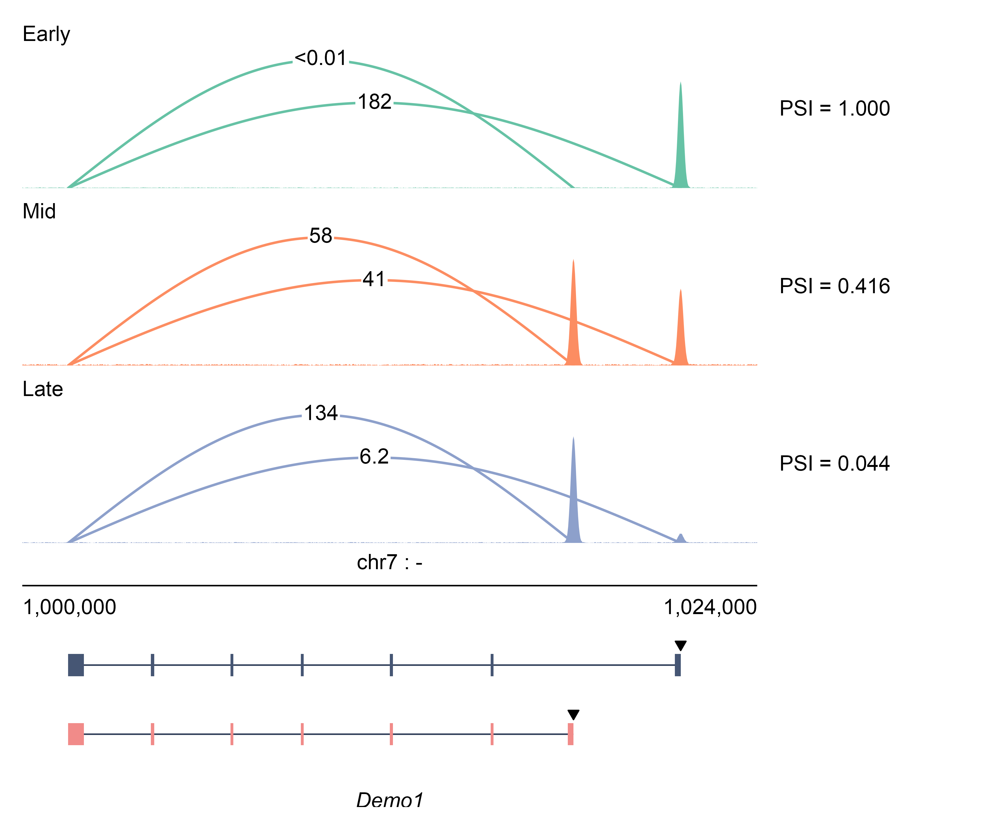
Running plot_sashimi(sd, preset = "tss") over the original 49-gene cohort reproduces the figures this style comes from to 99.97 % of pixels, the remainder being anti-aliasing along the curves. data-raw/verify_reference.R re-runs that comparison.
The default
Three cell types, replicates averaged, junction counts on the arcs, transcript models and a coordinate bar beneath.
One panel per library, on a shared scale
fix_y_scale = TRUE makes depth comparable between panels, with a log-scaled arc width.
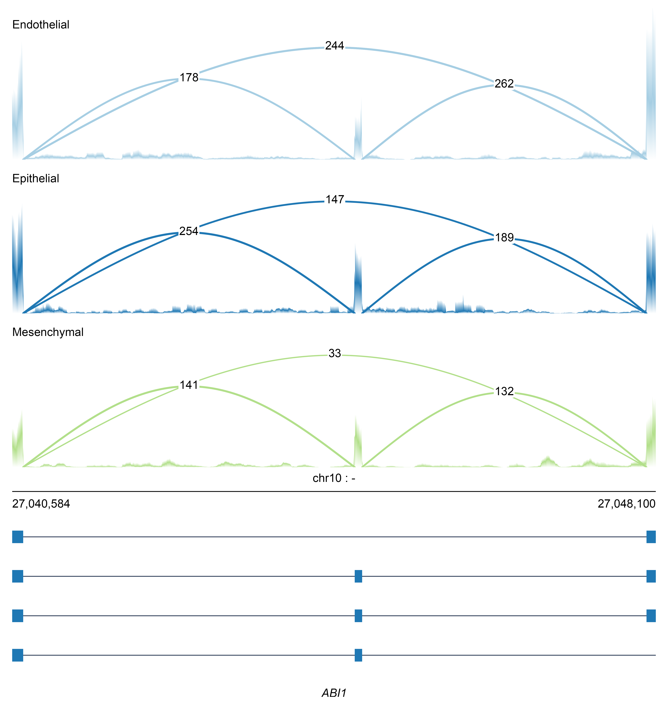
Label placement and panel background
arc_label_position decides whether the count sits on the curve — its opaque box interrupting the line, which keeps the digits readable where arcs cross — or above an unbroken curve. background tints the coverage panel, which separates stacked tracks without drawing rules between them.
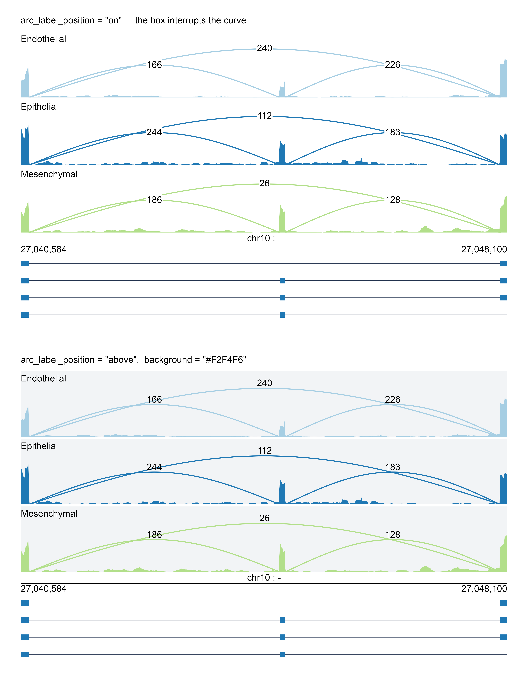
Overlay
overlay combines groups into shared panels, as ggsashimi --overlay does. A junction shared by the overlaid groups becomes one arc, not several stacked on top of each other.
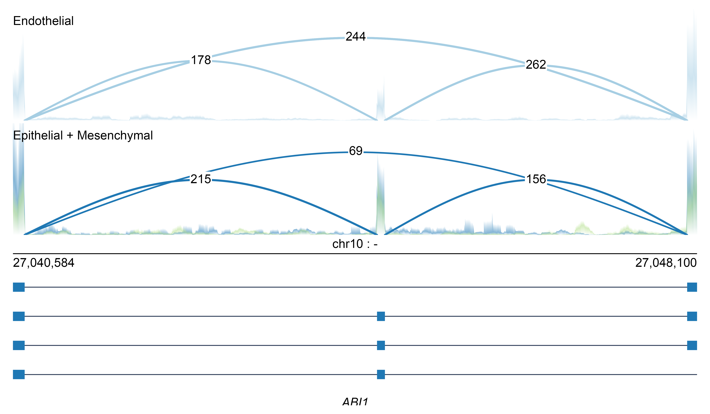
Intron compression
The same locus with shrink = FALSE and shrink = TRUE. Note the coordinate bar in the lower figure: the tick marks are evenly spaced on the page but their labels are not evenly spaced in the genome, which is the compression made visible.
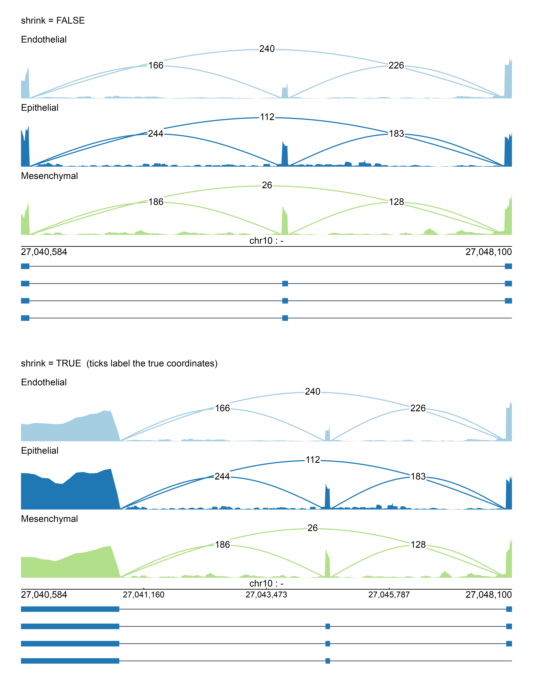
Log coverage, and arcs below the axis
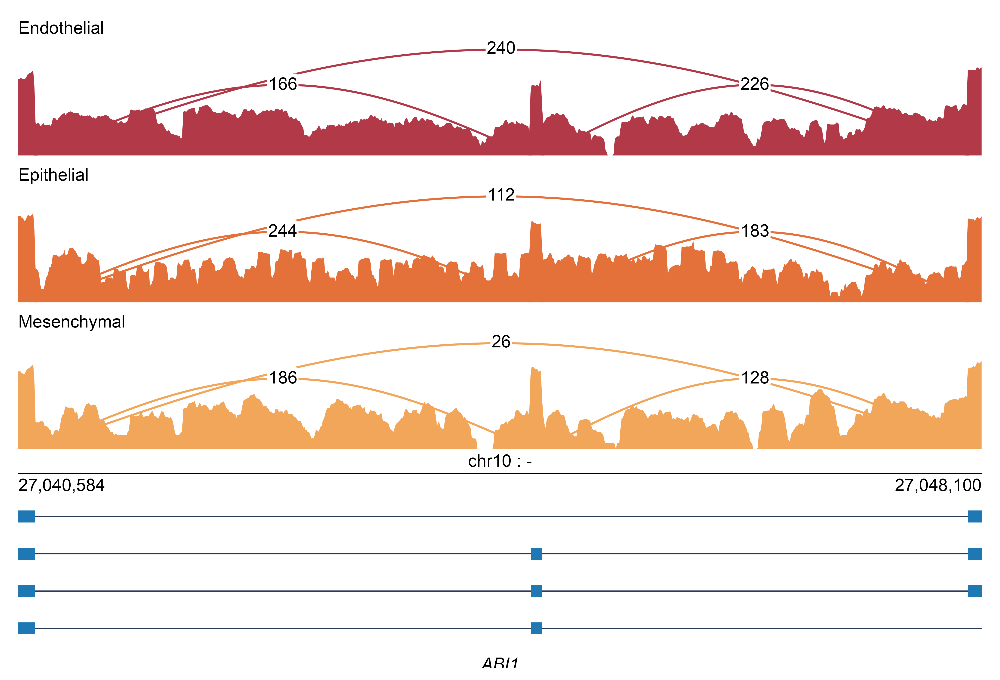
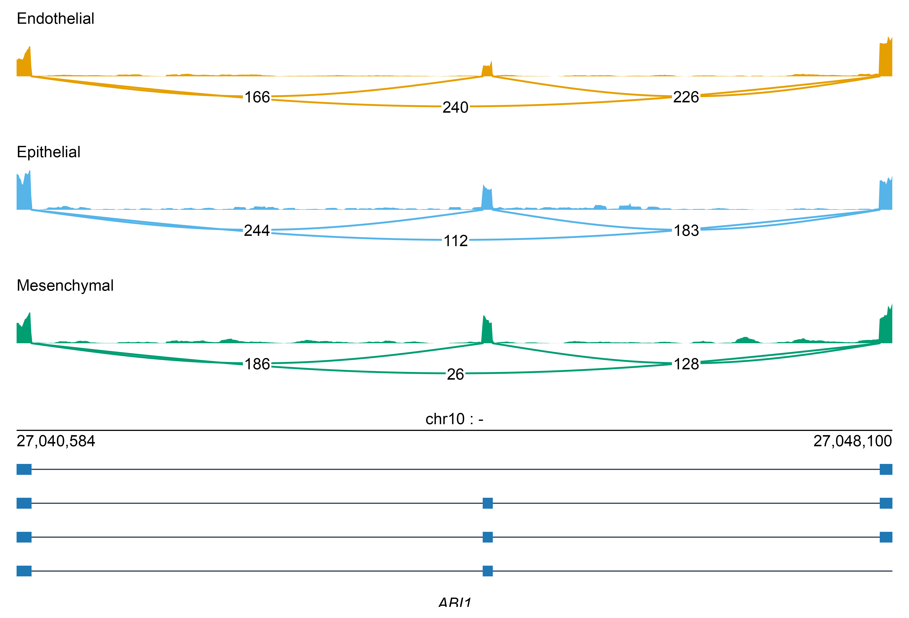
An rMATS skipped-exon event
A real cassette exon at chr10:27,044,584-27,044,670 with ΔΨ = −0.22 between endothelial and epithelial cells. The upper model row is the inclusion isoform, the lower one the skipping isoform.
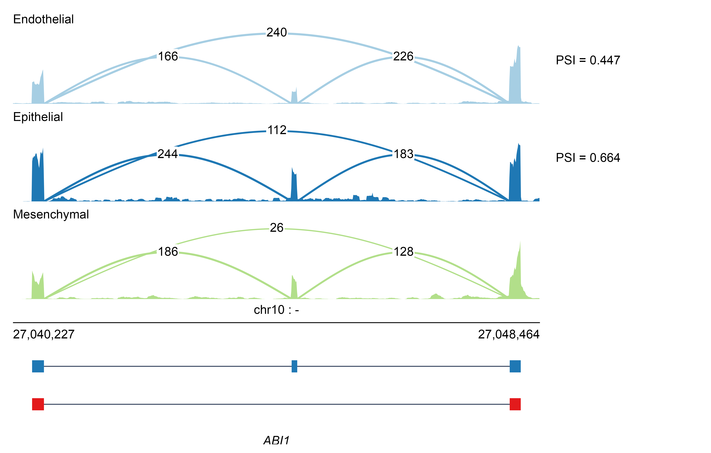
Genome tracks
The browser idiom: BED12/UCSC models with chevrons showing the direction of transcription, start-site markers, coverage tracks with their range bracketed at the left, titles down the right, and a Kb axis. The first figure is the same simulated locus as above, drawn the other way; the second is the ENCODE ABI1 data.
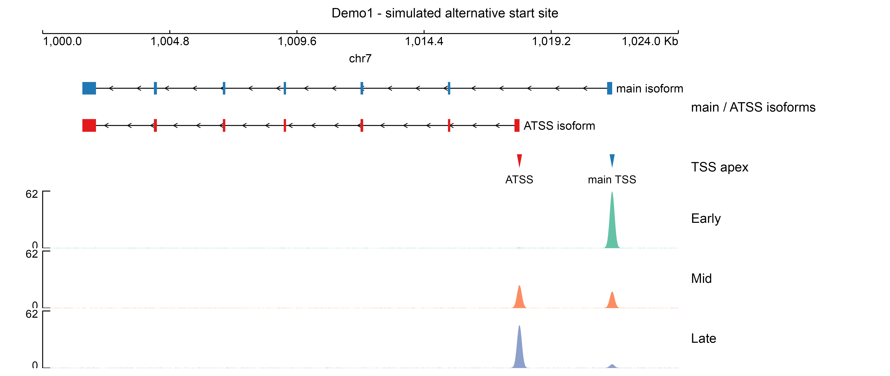
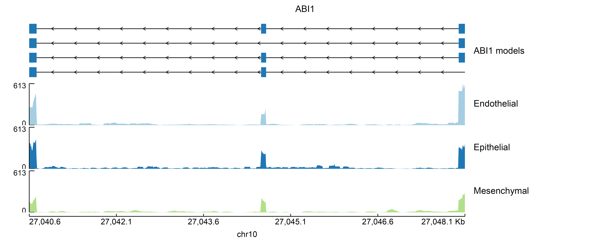
All arguments
Presets
preset is a named bundle of the arguments below. Anything you pass explicitly overrides it, so preset = "tss" gets the start-site style and preset = "tss", arc_shape = "bezier" gets that style with a different curve.
preset |
For |
|---|---|
default |
Paired, arcs above the coverage, counts on the curve |
tss |
Start-site activity: Set2 tracks, slate/coral models, role-keyed arc heights, adaptive activity labels, PSI gutter |
junction |
Junction counts from alignments: integer labels, width tracking support, span-scaled heights |
minimal |
One ink, unboxed labels, no features |
igv |
X-spline arcs on a tinted panel |
plot_sashimi()
Returns a patchwork of ggplot panels.
| Argument | Default | Meaning |
|---|---|---|
x |
— | A sashimi_data object, a list of slot tables, or a directory path |
preset |
NULL |
Style bundle, see above |
locus |
NULL |
Which locus to draw; defaults to the first |
groups |
NULL |
Groups to draw, in order; defaults to all present |
overlay |
NULL |
Combine groups into shared panels: a named list, or a column name in tracks
|
overlay_junction_fun |
"mean" |
How a junction shared by overlaid groups is combined |
reverse_minus |
FALSE |
Draw a minus-strand locus 5′→3′, left to right |
| Colour | ||
palette |
NULL |
Palette name, colour vector, named vector, or a palette file |
alpha |
1 |
Opacity of the coverage areas |
background, background_alpha
|
NA, 1
|
Fill and opacity for the coverage panels |
role_fill |
NULL |
Named fills for transcript model roles |
feature_color |
"#E08214" |
Fill for the feature boxes |
| Signal | ||
normalize |
"none" |
none, cpm, rpm, rpkm, size_factor, manual, max, sum
|
library_sizes |
NULL |
Named vector of library sizes |
aggregate |
"none" |
Collapse replicates: mean, median, sum, max, none
|
fix_y_scale |
FALSE |
Give every panel the same y limit |
ymax |
NULL |
Explicit y limit; overrides fix_y_scale
|
log_y |
FALSE |
Draw coverage on a log10(1 + value) axis |
min_count |
0 |
Drop junctions with fewer supporting reads |
| Intron compression | ||
shrink |
FALSE |
TRUE, or an intron_map() object |
shrink_method |
"power" |
none, power, log, fixed, scale
|
shrink_gamma |
0.7 |
Exponent for the power rule |
shrink_min |
100 |
Shortest intron worth compressing, in bp |
| Arcs | ||
arc_shape |
"sine" |
sine, parabola, bezier, xspline, elbow, arch
|
arc_height_rule |
"auto" |
auto, constant, span, linear, sqrt, log
|
arc_height_frac |
c(0.8, 1.2) |
Apex heights as a fraction of ymax; name it by role to key heights to roles |
arc_width_rule |
"constant" |
constant, log, miso, linear
|
arc_width |
0.5 |
Line width scale factor |
arc_side |
"above" |
above or below the coverage |
arc_n |
121 |
Points per arc path |
show_arc_label |
TRUE |
Print the count on each arc |
arc_label_format |
"activity" |
activity, count, coord, none, or a function |
arc_label_position |
"on" |
on the curve, above it, or none
|
label_background |
TRUE |
White box behind an "on" label |
label_padding |
0.6 |
Padding inside that box, in points |
label_offset |
0.03 |
Clearance for an "above" label |
| Annotation panel | ||
show_psi |
TRUE |
Print PSI in the right-hand gutter |
psi_pad |
0.30 |
Width of that gutter, as a fraction of the window |
show_model |
TRUE |
Draw the transcript models |
show_features |
TRUE |
Draw the features slot |
show_apex |
TRUE |
Mark start sites with a triangle |
show_tx_label |
FALSE |
Print each transcript’s identifier |
show_coord_bar |
TRUE |
Draw the coordinate bar |
coord_ticks |
TRUE |
Intermediate ticks; drawn when introns are compressed |
chrom_style |
"keep" |
keep, ucsc (ensure a chr prefix), ensembl (strip one) |
show_gene_label |
TRUE |
Print the gene name in italic |
collapse_models |
FALSE |
One row per role rather than per transcript |
arrow_bins |
0 |
Strand arrowheads per transcript |
| Layout | ||
base_size |
9 |
Base font size in points |
hairline |
0.3 |
Line width for rules |
panel_height, ann_height
|
1, 1.5
|
Relative heights |
title |
NULL |
Figure title |
theme |
NULL |
A ggplot2 theme, "omakase", or "axes"
|
plot_tracks()
| Argument | Default | Meaning |
|---|---|---|
x |
NULL |
A sashimi_data object, or NULL when tracks is given |
tracks |
NULL |
A list of track_*() objects; built from x when NULL
|
region |
NULL |
Coordinate range; taken from x when NULL
|
locus |
NULL |
Which locus, when x holds several |
axis |
"bottom" |
bottom, top or none
|
palette |
NULL |
Palette for the per-group coverage tracks |
title |
NULL |
Figure title |
title_width |
0.24 |
Fraction of the width reserved for track titles |
left_pad |
0.05 |
Fraction reserved for the coverage range labels |
base_size, hairline
|
9, 0.3
|
Type size and rule width |
shrink, shrink_method, shrink_gamma
|
FALSE, "power", 0.7
|
Intron compression |
chrom_style |
"keep" |
How the contig name is printed |
Track builders: track_models(models, title, color, style, labels, chevrons, height, row_by) · track_coverage(coverage, title, color, group, ymax, show_range, log_y, height) · track_features(features, title, color, labels, shape, collapse, height) · track_axis(unit, n, show_chrom, height) · track_spacer(height).
sashimi_from_bam()
| Argument | Default | Meaning |
|---|---|---|
bam |
— | A BAM/CRAM/SAM path, a vector of paths, or a manifest |
region |
— |
"chr:start-end", a parse_region() object, or a data frame of regions |
annotation |
NULL |
GTF/GFF3 path, or a read_annotation() result |
bin |
NULL |
Coverage bin width in bp; chosen from the window when NULL
|
n_bins |
800 |
Target bin count when bin is NULL
|
group_col, label_col
|
NULL |
Manifest columns for grouping and panel labels |
strand |
"none" |
none, sense, antisense, mate1_sense, mate2_sense
|
keep_strand |
"both" |
both, +, -
|
min_count |
1 |
Drop junctions with fewer supporting reads |
junction_overlap |
"within" |
within keeps junctions contained in the region; any also keeps those running off the edge |
min_mapq |
0 |
Ignore alignments below this mapping quality |
flags |
NULL |
A Rsamtools::scanBamFlag() value |
per_sample |
TRUE |
Keep one track per sample rather than per group |
gene |
NULL |
Restrict the annotation to this gene |
flank |
0 |
Widen the region by this many bp on each side |
sashimi_from_rmats()
Takes everything sashimi_from_bam() does via ..., plus:
| Argument | Default | Meaning |
|---|---|---|
events |
— | An rMATS output path, or a read_rmats() data frame |
bam |
— | A manifest or vector of BAM paths |
event_type |
NULL |
SE, A5SS, A3SS, MXE, RI; inferred from the file name |
fdr |
NULL |
Keep events with FDR at or below this |
min_dpsi |
NULL |
Keep events with abs(IncLevelDifference) at least this |
top |
NULL |
Keep the most significant top events |
genes |
NULL |
Restrict to these gene names or IDs |
chrom_style |
"keep" |
keep, ucsc, ensembl — for contig-name mismatches |
flank |
300 |
Padding around the event |
psi_from |
"rmats" |
rmats, junctions, none
|
sashimi_from_tags()
| Argument | Default | Meaning |
|---|---|---|
tags |
— | A manifest, a vector of BED paths, or a tag data frame |
region |
— | A region string or a data frame of regions |
annotation |
NULL |
GTF/GFF3 for transcript models |
bin |
25 |
Bin width in bp |
footprint |
250 |
Distance each tag is extended toward the 3′ end |
normalize |
"tpm" |
tpm or none
|
library_sizes |
NULL |
Named vector of total tag counts |
aggregate |
"mean" |
mean, median, sum, none
|
strand |
"gene" |
gene uses the region’s own strand; or + / -
|
activity |
NULL |
Start-site activities to draw as arcs |
plot_consequence()
| Argument | Default | Meaning |
|---|---|---|
x |
— | A classify_consequence() or consequence_summary() table |
style |
"donut" |
donut, bar, lollipop, stacked
|
by |
"subtype" |
subtype or category
|
filter |
NULL |
An expression evaluated in x to subset rows |
palette |
NULL |
Named vector of category colours |
title |
NULL |
Plot title |
base_size |
10 |
Base font size in points |
inner_r |
0.24 |
Inner radius of the ring |
bar_range |
c(0.11, 0.185) |
Minimum and maximum radial bar height |
gap_deg |
2 |
Angular gap between sectors |
start_deg |
90 |
Angle at which the first sector begins |
show_percent |
TRUE |
Print each share inside the ring |
show_n |
FALSE |
Append raw counts to the external labels |
show_guides |
TRUE |
Dotted magnitude guide circles |
legend_position |
"bottom" |
Legend placement |
Copyright and license
Copyright © 2026 Yuchen Shen.
Released under the MIT License. See LICENSE.md for the full text. In short: use it, change it, redistribute it, sell it — just keep the copyright notice, and there is no warranty.
Citation
If omakase is useful in published work, please cite the package alongside the tools whose data or algorithms you relied on, for example:
“R package, omakase (https://github.com/EthanShenx/omakase), is used to visualize the data.”